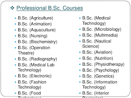
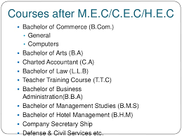

B.Tech. stands for Bachelor of Technology. It is a 4 years
long Bachelor's Degree program in the field of Engineering.
These programs are very popular among Science stream PCM group students.
We all know that Engineering is a very vast field. It consists of many branches.
Based on these branches, we also have numerous engineering branches.
Here are the courses in B.Tech:
Mechanical Engineering
Civil Engineering
Electrical Engineering
Chemical Engineering
Computer Science Engineering
IT Engineering
IC Engineering
EC Engineering
Electronics Engineering
Electronics and Telecommunication Engineering
Petroleum Engineering
Aeronautical Engineering
Aerospace Engineering
Automobile Engineering
Mining Engineering
Biotechnology Engineering
Genetic Engineering
Plastics Engineering
Food Processing and Technology
Agricultural Engineering
Dairy Technology and Engineering
Agricultural Information Technology
Power Engineering
Production Engineering
Infrastructure Engineering
Motorsport Engineering
Metallurgy Engineering
Textile Engineering
Environmental Engineering
Marine Engineering
Naval Architecture
Course duration is 4 years.
There also exists 5 years long integrated programs.
Notable integrated programs are
1.B.Tech. + M.E./M.Tech.
2.B.Tech. + MBA
2)DIPLOMA IN ENGINEERING
They are technical Diploma programs. The course duration is 3 years.
Like in case of B.E. and B.Tech.,
Diploma in Engineering programs are also classified on the basis of engineering branches.
Diploma in Mechanical Engineering
Diploma in Electrical Engineering
Diploma in Civil Engineering
Diploma in Chemical Engineering
Diploma in Mining Engineering
Diploma in Computer Science Engineering
Diploma in Marine Engineering
Diploma in EC Engineering
Diploma in IC Engineering
After completing Diploma in Engineering, candidates may secure admission directly into the second academic year of B.Tech.
It is called lateral entry.
3)MERCHANT NAVY COURSES
Merchant Navy is a very rewarding sector.
Careers belonging to this sector are quite different from a typical 9 to 5 job!
B.Sc. Nautical Science
B.E. Marine Engineering
B.E. Naval Architecture and Offshore Engineering
B.E. Petroleum Engineering
B.E. Mechanical Engineering
B.E. Harbour & Ocean Engineering
B.E. Civil Engineering
B.E. Electrical & Electronics Engineering
B.Sc. Marine Catering
Electro Technical Officer Course
4) B.ARCH
Landscape Architecture
Architectural Conservation
Housing Architecture
Urban Planning
Regional Planning
Transport Planning
Building Science
Building Material Engineering
MBA is another popular choice among B.Arch. graduates.
MBA specializations such as Real Estate management,
Project management and Construction management will certainly
add more value to the CV of Architects.
5)Degree COURSES
B.A. (Bachelor of Arts)
B.Com. (Bachelor of Commerce)
B.Sc. (Bachelor of Science)
B.Ed. (Bachelor of Education)
B.A.-B.Ed. Integrated Course
B.Sc.-B.Ed. Integrated Course

6)B Pharmacy
Bachelor in Pharmacy
Courses after Intermediate BIPC:
MBBS (Bachelor of Medicine, Bachelor of Surgery)
BHMS (Bachelor of Homeopathic Medicine & Surgery)
BAMS (Bachelor of Ayurveda Medicine & Surgery)
B. Pharm (Bachelor of Pharmacy)
B. Tech. ( Bachelor of Technology in Biotechnology)
B. Tech. ( Bachelor of Technology in Biotechnology)
BDS (Bachelors of Dental Science)
BE in Environmental Engineering
B. sc.( Bachelor of Science)
Forensic Science :
B.Sc. in Forensic Sciences
B.Sc. in Forensic Sciences
B.Sc. in Life Science, Chemistry, Forensic Science
Diploma in F/Sciences (Ballistics and Finger Prints)
Diploma in Forensic Science (Cyber Crimes)
Diploma in Forensic Science (Computer Forensics)
Diploma in Criminology and Forensic Science for Police personnel
Zoology :
B. Science in Aquaculture (Fishery Microbiology)
B.Sc. in Advanced Zoology and Biotechnology
B.Sc. in Zoology
B.Science (Hons) in Zoology and Animal Biotechnology
Biotechnology :
B.E. in Biotechnology
B.Tech (Industrial Biotechnology)
B.Science in Biotechnology
B.Sc. in Biotechnology and Bio informatics
Diploma in Biotechnology
Agriculture :
B.Sc. (Agriculture Mktg and Business Management)
B.Sc. (Bio-chem and Agricultural Chemistry)
B.Sc. in Crop Physiology
B.Sc. in Entomology
B. Sc in Agronomy
B. Sc in Agricultural Meteorology
B. Sc in Agricultural Biotechnology
B. Sc (Hons) in Agriculture
B. Sc in Agriculture.
B.Science in Agricultural Eco and Farm management
B. Sc in Agricultural Statistics
Geology :
B. Sc. (Hons) Geology
B. Sc. (Hons) Geology
PG Diploma in Geology (Ground water)
PG Diploma in Environmental Geology
PG Diploma in Engineering Geology
Textile :
B.E in Man Made Fiber Technology
B.E in Textile Technology
B.E in Textile Chemistry
Diploma in Fabrication Tech and Erection Eng
Diploma in Textile Tech
Diploma in Textile Eng
Microbiology :
Diploma in Industrial Microbiology
Diploma in Clinical Microbiology
Diploma in Clinical Pathology
B.Science (Hons) in Microbiology
B.Science in Microbiology
Food Technology :
B. Sc in Food Preservation and Processing
B. Sc in Food Processing
B. Sc in Food Processing and Technology
B. Sc in Food Storage, Preservation and Food Tech.
B. Sc in Food Technology (Bio-Chemical Engineering)
Diploma in Fish Processing Technology
Diploma in Sugar Technology
Humanities:

Courses after Intermediate MEC and CEC:
Bachelor of Arts in Economics (Hons)
Bachelor of Science in Mathematics (Hons)
Bachelor of Arts in Commerce
Bachelor of Science in Computer Science (BSc. in CS)
Bachelor of Business Administration (BBA)
Bachelor of Commerce (B.Com)
Bachelor of Management Studies (BMS)
Chartered Accountancy (CA)
Company Secretary (CS)
Bachelor of Information Technology (B.Tech)
Courses after Intermediate HEC:
B.Com= stands for Bachelor of Commerce. Generally a 3 years long course.
B.B.A=stands for Bachelor of Business Administration. 3 years long course.
B.M.S= stands for Bachelor of Management Science. 3 years long course.
C.A= stands for Chartered Accountancy. Duration depends on how you take training and clear exams.
integrated Law course. Duration is 5 years. It is a combination of General Graduation course and L.L.B.
B.B.S= stands for Bachelor of Business Studies. Course duration is 3 years.
B.H.M=stands for Bachelor of Hotel Management. Course duration is 4 years.
B.E stands for Bachelor of Economics. Course duration is 3 years.
B.F.Astands for Bachelor of Finance and Accounting. Course duration is 3 years.
B.C.A stands for Bachelor of Computer Applications. Course duration is 3 years.
B.Sc. Applied Mathematics. Course duration is 3 years.
B.Sc. Statistics. Course duration is 3 years.
B.M.M stands for Bachelor of Journalism and Mass Media. Course duration is 3 years.
B.Sc. Animation and Multimedia. Course duration is 3 years.
B.E.M= stands for Bachelor of Event Management. Course duration is 3 years.
B.F.D= stands for Bachelor of Fashion Design. Course duration is 3-4 years.
B.El.Ed= stands for Bachelor of Elementary Education. Course duration is 4 years.
B.P.Ed= stands for Bachelor of Physical Education. Course duration is 1 year.
D.El.Ed= stands for Diploma in Elementary Education. Course duration is generally 2 years.
B.SW= stands for Bachelor of Social Work. Course duration is 3 years.